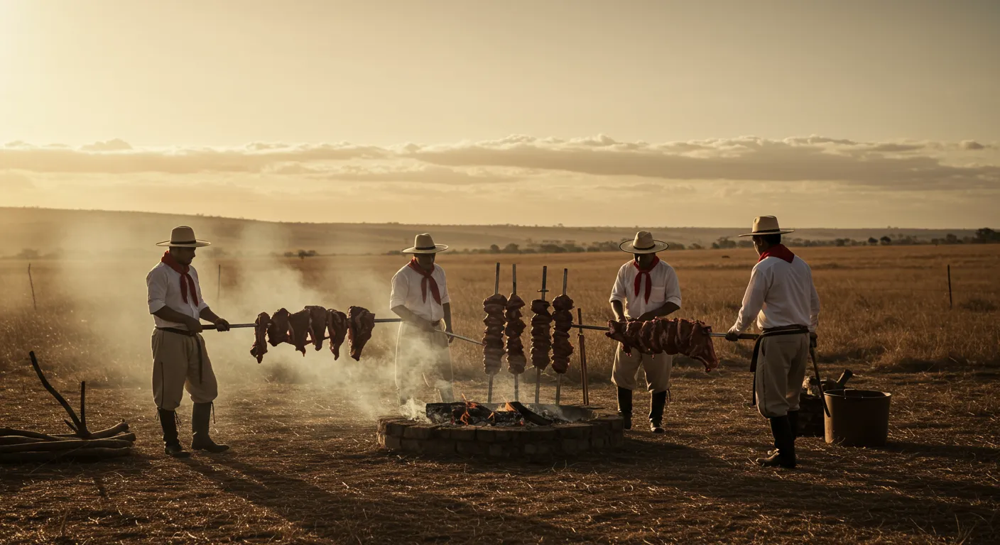

História e Importância Cultural
O Churrasco Gaúcho é um dos pratos mais tradicionais da região Sul do Brasil, especialmente do estado do Rio Grande do Sul. Sua origem está ligada aos costumes dos gaúchos que viviam nas áreas rurais e costumavam preparar grandes pedaços de carne assados diretamente no fogo de chão. Essa tradição começou por volta dos séculos XVIII e XIX, quando tropeiros e trabalhadores das fazendas utilizavam esse método simples de preparo durante suas viagens e atividades no campo. Com o tempo, o churrasco tornou-se um símbolo da cultura gaúcha e hoje é muito apreciado em reuniões familiares e eventos em todo o Brasil.